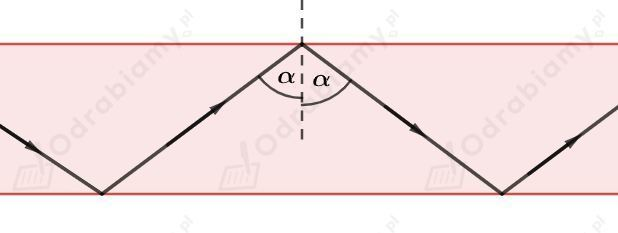
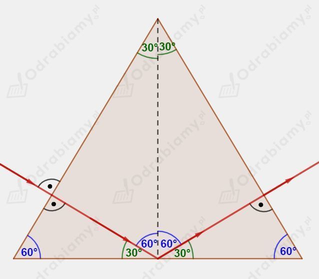
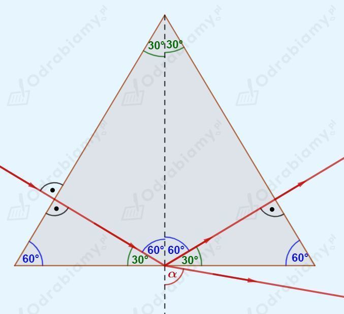
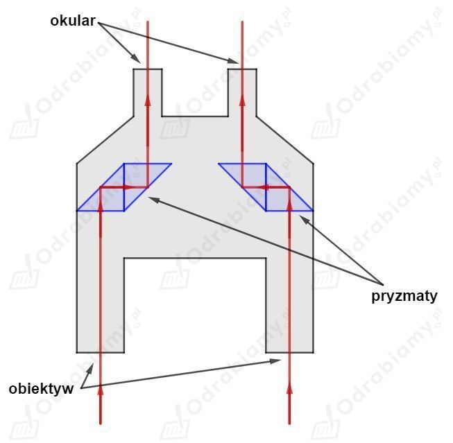

a) całkowite wewnętrzne odbicie nie zachodzi
b) całkowite wewnętrzne odbicie zachodzi
c) całkowite wewnętrzne odbicie nie zachodzi
d) całkowite wewnętrzne odbicie nie zachodzi
Całkowite wewnętrzne odbicie może zajść tylko jeśli światło przechodzi z ośrodka w którym porusza się z mniejszą prędkością, do ośrodka w którym porusza się z większą prędkością. Zatem światło musi przechodzić z wody do powietrza, aby mogło zajść całkowite wewnętrzne odbicie.
Dodatkowo warunkiem koniecznym do zajścia całkowitego wewnętrznego odbicia jest kąt padania promienia światła większy lub równy od ustalonego kąta granicznego. Kąt graniczny dla granicy ośrodków wody i powietrza wynosi 49° (kąty dla różnych granic ośrodków zostały podane w podręczniku).
Rysunek do zadania:

Na zdjęciu zamieszczonym w podręczniku mierzymy kąt pomiędzy promieniem padającym i odbitym przy pomocy kątomierza (kąty padania i odbicia są sobie równe).
Wykonujemy pomiar kątomierzem:
Zatem dla pary ośrodków pleksiglas-powietrze kąt graniczny jest na pewno mniejszy od 62° (dla kątów większych od kąta granicznego zachodzi zjawisko całkowitego wewnętrznego odbicia).
a) Szklany pryzmat umieszczony w powietrzu.
Dalszy bieg promienia światła wygląda następująco:

Kiedy promień światła pada prostopadle na granicę dwóch ośrodków to przechodzi prostoliniowo bez efektu załamania.
Kąt graniczny dla granicy ośrodków szkło-powietrze wynosi 42°. Kąt padania w naszym przypadku będzie równy 60°. Dla kąta padania większego od kąta granicznego zachodzi zjawisko całkowitego wewnętrznego odbicia.
b) Szklany pryzmat umieszczony w wodzie.
Dalszy bieg promienia światła wygląda następująco:

Kiedy promień światła pada prostopadle na granicę dwóch ośrodków to przechodzi prostoliniowo bez efektu załamania.
Kąt graniczny dla granicy ośrodków szkło-woda wynosi 63°. Kąt padania w naszym przypadku będzie równy 60°. Dla kąta padania mniejszego od kąta granicznego promień padający ulega zarówno odbiciu jak i załamaniu. Kąt jest większy od kąta 60°.
Całkowite wewnętrzne odbicie jest wykorzystywane w budowie lornetek do równoległego przesunięcia biegu promieni światła wewnątrz lornetki.
Poniższy schemat budowy lornetki przedstawia uproszczoną ideę tego rozwiązania (na schemacie pominięto układy soczewek niezbędne do działania lornetki):

W lornetkach zazwyczaj rozstaw obiektywów jest większy niż rozstaw okularów. Promienie światła wpadające do obiektywów lornetki muszą zostać zwężone, tak, aby mogły wpaść do naszych oczy. Jest to możliwe dzięki wykorzystaniu zjawiska całkowitego wewnętrznego odbicia w pryzmatach. Odpowiedni układ pryzmatów przemieści równolegle promień wpadający do lornetki. Jeżeli zastosowany układ pryzmatów jest ruchomy, to dodatkowo łatwo możemy zmieniać rozstaw okularów lornetki.